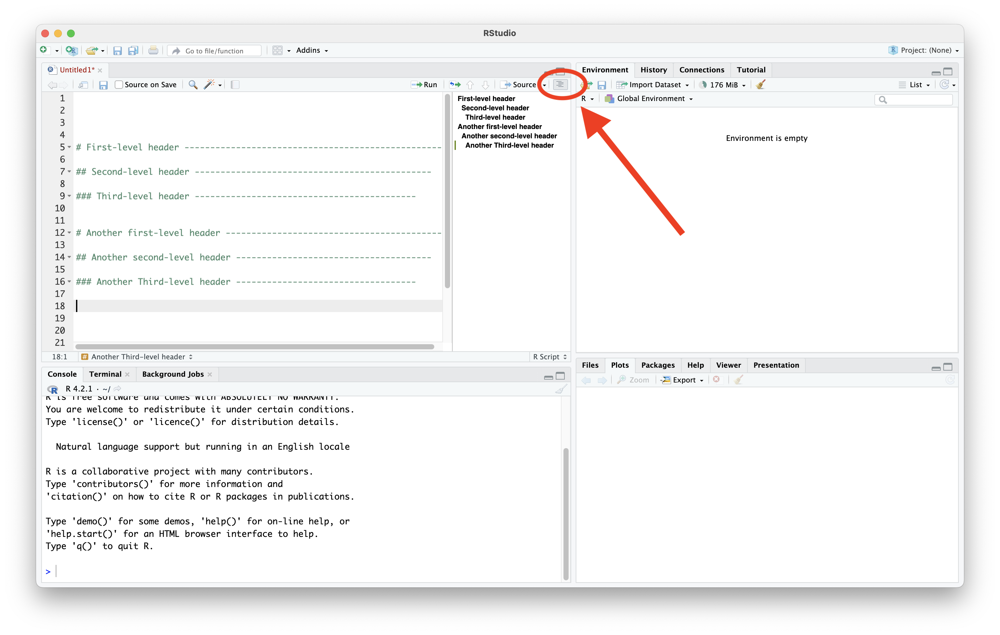
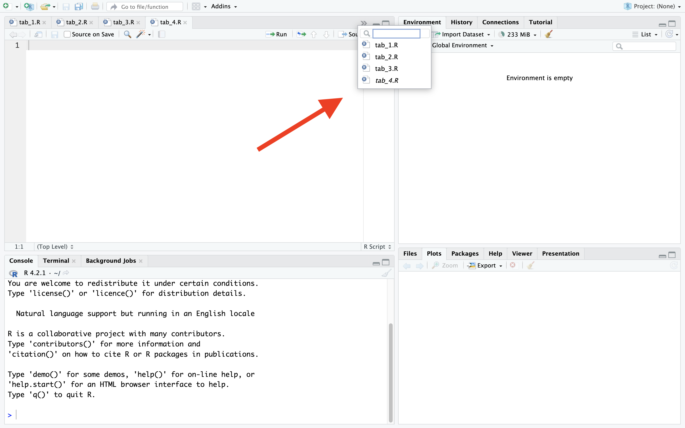
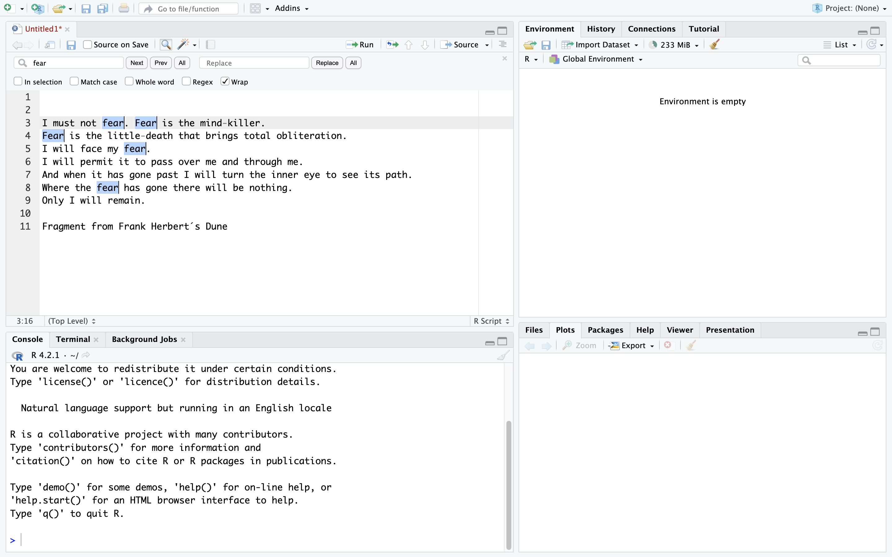
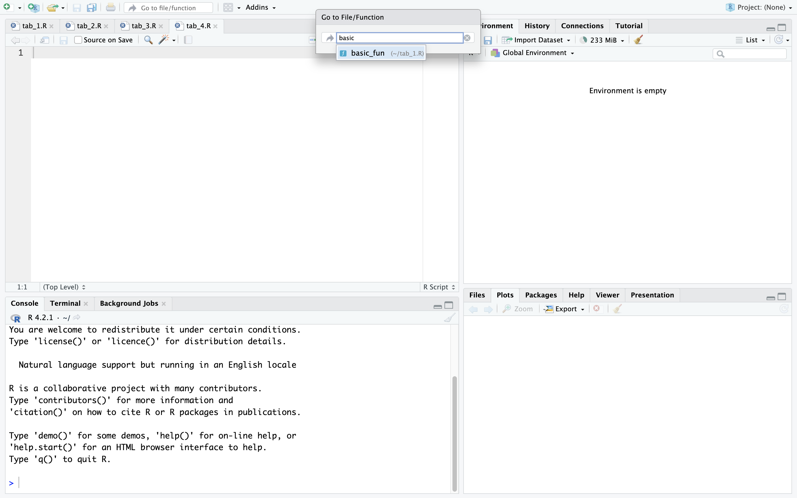
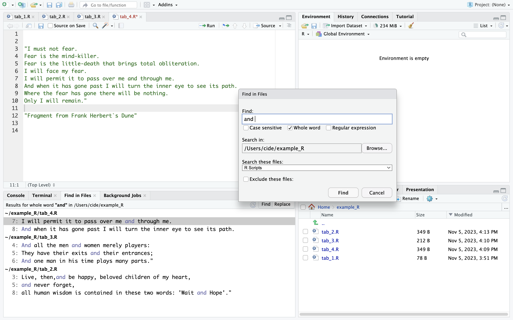
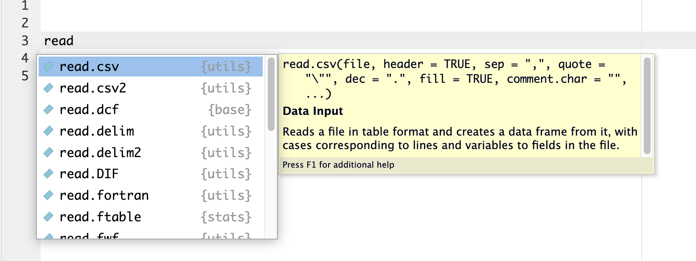
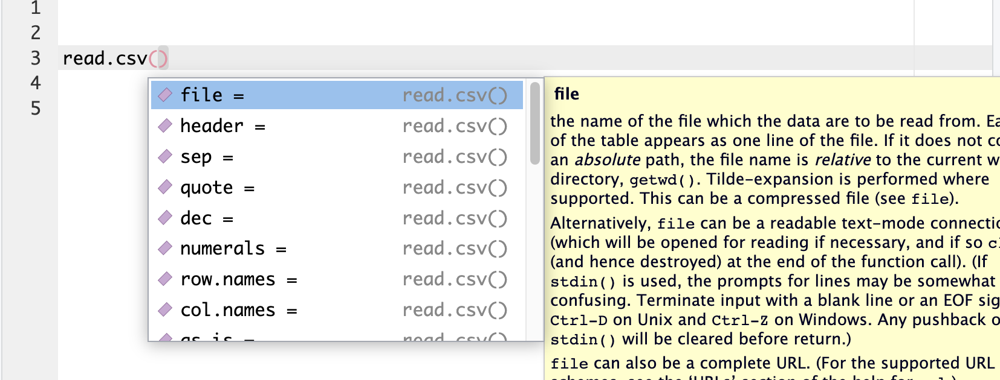
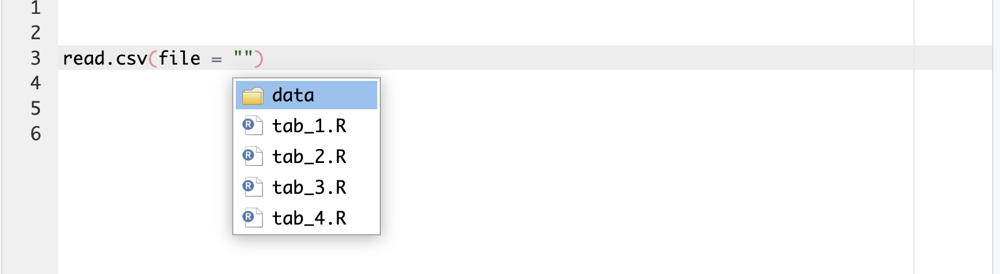
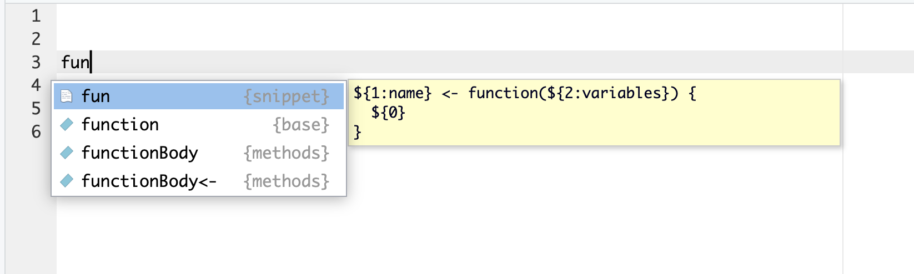
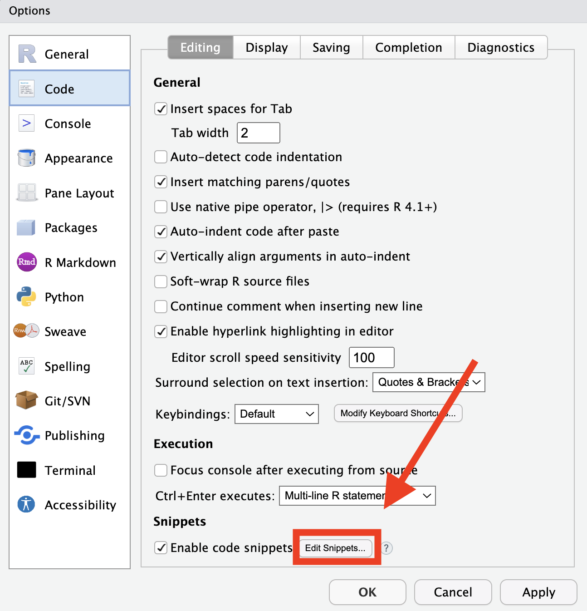

1 Introduction
I remember my first days writing code in R. At the beginning I typed every part of the assignment operator (< and then -), I typed every # at the start of all the lines I wanted to comment, I typed every part of a code chunk while writing notebooks in R Markdown (which nowadays has evolved to Quarto). The mouse was my main tool to open new scripts, change tabs, and close tabs. When I had to read or write any file I had to double check how it was written and where it was located. And when an important script was lost, I did not have any alternative other than to check every one of the folders where I thought it could be placed.
At first I did not imagine that a lot of people have suffered the same as I, but already had thought about smart ways to tackle these difficulties.
I remember that everything started to change when I saw a colleague commenting multiple lines of code simultaneously by first selecting them and then pressing Ctrl+C (Cmd+C for Mac). From that point I started to learn and use new shortcuts and commands to improve the quality of my scripts as well as to reduce the time I spent developing them.
If you have kept thinking on how to speed up your code writing process or even if you only want to be more comfortable developing code, then you have arrived to the right place!
In this brief tutorial I will try my best to share some of the most used shortcuts in RStudio, according to my experience and to that of other users that have also talked on the subject (check Section 10). To make this tutorial a little bit more intuitive. I will break the shortcuts in the next categories:
- Insert code
- Edit code
- Move between panes and tabs
- Find files and functions
- Running code
- Code completion
- Snippets
Let’s start with Show keyboard shortcuts help!. This shortcut brings up a screen listing some of some of the most useful shortcuts. To exit this screen you just have to press Esc.
In case you want to check the full list of shortcuts, in the upper right corner of the help screen you will find a link called See All Shortcuts. It will take you to a page containing all the shortcuts divided by OS.
Windows  |
Mac  |
|---|---|
| Alt+Shift+K | Option+Shift+K |

All the shortcuts in this tutorial will have the same format as in the previous example. They will be inside of a table, where the title is the name of the shortcut and it will show the shortcut as it should be typed for both, Windows and Mac OS.
2 Insert code
Want to create a new R Script? easy-peasy!
| Windows |
Mac |
|---|---|
| Ctr+Shift+N | Cmd+Shift+N |
You want to assign an object? Instead of writting <- key by key, you can do it directly by pressing:
| Windows |
Mac |
|---|---|
| Alt+- | Option+- |
While concatenating functions or operations, forget about writing the pipe opearator by hand. You can insert it directly by pressing:
| Windows |
Mac |
|---|---|
| Ctrl+Shift+M | Cmd+Shift+M |
The type of pipe that is going to be inserted is defined in Global Options.
Currently there are two pipes that are commonly used:
- the magrittr pipe
%>%, and - the native pipe
|>.
You can preset the pipe you want to insert by accessing Global Options/Code/Editing and defining if you want to use the native pipe (in case you don’t, the magrittr pipe will be automatically used).

If you are working on a Quarto or an R Markdown file, you can forget of writing every component of the code chunks by hand by using the insert code chunk shortcut.
It certainly will save you a good amount of time. Besides, it will help you to keep focused in the main things while creating a Notebook: developing your code and your writing.
| Windows |
Mac |
|---|---|
| Ctrl+Alt+I | Cmd+Option+I |
Comment/uncomment current line selection is one of the first shortcuts that I learned, and currently it is still among the ones I use the most. Instead of manually adding # at the start of each line you want to comment, you can select whole sections of code and comment them. Since commenting code is very common, this shortcut will save you an enormous amount of time.
| Windows |
Mac |
|---|---|
| Ctrl+Shift+C | Cmd+Shift+C |
In case you are looking to organize your code scripts sections, subsections and other sorting levels, you will be happy to find about how to insert a new code section.
This is ideal to have a good structure of your code, and the best part is that all the sections and subsections that you create will be visible in the code outline that is next to the Source button in Rstudio.
| Windows |
Mac |
|---|---|
| Ctrl+Shift+R | Cmd+Shift+R |
The section breaks have a similar structure as the Quarto and RMarkdown headers. The number of # at the beginning of each line defines the level of the headers:
#stands for 1st level header,##stands for 2nd level headers,###stands for 3rd level headers, and so on.

While writing a script, it may be the case that you lost the indentation level at what you should be working in specific sections of the code. Instead of manually defining the code indentation you can make a selection of the code and directly indent it. This is a great aid to visually structure your code.
In case you want to reindent all the content in a script, first select all (Ctrl + A for Windows, and Cmd + A for Mac) and then reindent. This will save you a lot of time and headaches figuring out how the code should be indented.
| Windows |
Mac |
|---|---|
| Ctrl+I | Cmd+I |
3 Edit code
You can move lines of code up or down without having to copy them.
| Windows |
Mac |
|---|---|
| Alt+Up/Down | Option+Up/Down |
You can also copy lines of code up or down without having to copy and paste them.
| Windows |
Mac |
|---|---|
| Shift+Alt+Up/Down | Option+Cmd+Up/Down |
You can select code without using the mouse. To create or modify a selection using the keyboard, you have to maintain Shift pressed while moving your cursor. You will select anything that have been passed down by your cursor. Once you stop pressing Shift you will stop modifying your selection.
| Windows |
Mac |
|---|---|
| Shift+[Arrow] | Shift+[Arrow] |
You can move your cursor directly to the start or the end of a line only with your keyboard following the next key combination:
| Windows |
Mac |
|---|---|
| Alt+Left/Right | Cmd+Left/Right |
You can also move your cursor to the start or the end of a word with the following shortcut:
| Windows |
Mac |
|---|---|
| Ctrl+Left/Right | Alt+Left/Right |
You can add multiple cursors to edit multiple lines of code simultaneously. For that you need to press the next combination of keys.
| Windows |
Mac |
|---|---|
| Ctrl+Alt+Up/Down | Ctrl+Option+Up/Down |
Once you know how to select, move the cursor to the start/end of a line, move the cursor to the start/end of a word, and add multiple cursors, you have all the ingredients to make more complex selections. You can combine select with any of these shortcuts to get different types of selections.
Here is an examples (in Mac format):
- You can make a selection from your cursor position to the end of a line by pressing
Shift+Alt+Leftin Windows (orShift+Cmd+Leftin Mac).
4 Move between panes and tabs
You can move focus to Source Editor, i.e., place the cursor in the active script, without taking your hands out of the keyboard with the following shortcut.
| Windows |
Mac |
|---|---|
| Ctrl+1 | Cmd+1 |
The same idea goes for the console. You can place the cursor in the Console by using:
| Windows |
Mac |
|---|---|
| Ctrl+2 | Cmd+2 |
I mainly use the shortcuts to move the cursor between the Source Editor (1) and the Console (2). In any case, you can focus the following elements inside RStudio just by changing the number of the key combination:
- 1 - Source Editor
- 2 - Console
- 3 - Help
- 4 - History
- 5 - Files
- 6 - Plots
- 7 - Packages
- 8 - Environment
- 9 - Viewer
To move between tabs without taking your hands out of the keyboard you have to type:
| Windows |
Mac |
|---|---|
| Ctrl+Alt+Left/Right | Cmd+Option+Left/Right |
The previous shortcut may not be practical if you have opened many tabs. If you know the name of the tab you want to go, you can open it directly using Switch to tab which shows a list of all the tabs. You can look for a specific tab by writing its name and access it by pressing enter.
| Windows |
Mac |
|---|---|
| Ctrl+Shift+. | Cmd+Shift+. |

You can close current document once you have finished working on it. This is very usefull to close multiple tabs without using the mouse.
| Windows |
Mac |
|---|---|
| Ctrl+W | Cmd+W |
5 Find files and functions
The following shortcuts serve you to look for specific words in the scripts and files that you are currently developing. This same set of tools will also let you replace all the text that matches your search.
Let’s start with Find/Replace text. It will show a find/replace utility. You can select all the texts that match your search one by one (with Next and Prev), or you can select all of them at once (with All). It also lets you replace all the matches with another text. When a part of the of code is previously selected, the search and replace utility will only look into the selected code by default. You can modify the behavior of this utility by ticking its different options.
| Windows |
Mac |
|---|---|
| Ctrl+F | Cmd+F |

fearThe Go to file/function shortcut brings up a search box that allows you to:
- access the files where you have defined specific functions, or
- open files that are present in your current working directory.
To do this, you will have to type the name or the function or file that you want to check and then press enter.
| Windows |
Mac |
|---|---|
| Ctrl+. | Cmd+. |

basic_fun function among the files of a working directoryIn my consideration the most powerful and usefull search tool in the RStudio IDE is Find in files. It is an utility that lets you find any text that matches your search among all the files present under your working directory or in any directory that you specify. It will list you all the findings disaggregating them by the files in where they are located. Just as Find/replace text this utility also lets you replace all the matches with specified text.
| Windows |
Mac |
|---|---|
| Ctrl+Shift+F | Cmd+Shift+F |

and among the RScripts of a given directory6 Run code
The most basic way to execute code in the Source Editor is to put the cursor in the line (or selection) of code you want to run and use this shortcut. This will execute the current line (or selection) and move your cursor to the next part of the code. It is very useful when you are running your Scritps step by step.
| Windows |
Mac |
|---|---|
| Ctrl+Enter | Cmd+Enter |
This shortcut is similar to the previous one, except that the cursor will remain in its place after executing the code.
It can be very useful, specially while making code tests or developing figures in ggplot, and you don’t want to move your cursor away every time the code is executed.
| Windows |
Mac |
|---|---|
| Alt+Enter | Option+Enter |
The following shortcut is one of my personal favorites. Imagine that you have written a lot of lines in a script and you would like to run continue modifying it after restarting your computer You don’t have to run the code line by line until you arrive to a specific part of the code. With this shortcut you can place your cursor in a line and run everything before it.
Please, give it a try. I have saved plenty of time since I have started using it, and I am sure that it can do the same for you.
| Windows |
Mac |
|---|---|
| Ctrl+Alt+B | Option+Cmd+B |
This is the complement of the previous shorcut. After placing the cursor in a specific line, you can run the rest of the code by using:
| Windows |
Mac |
|---|---|
| Ctrl+Alt+B | Option+Cmd+B |
7 Code completion
RStudio has several completion functions that are very useful while writing code. After you start typing, a completion list will pop up showing the names of functions, objects and snippets that match your text. If the list is not shown, you can make it appear by pressing Tab while your cursor is at the end of what you have typed. Inside the list use the Up/Down arrows to move between the suggestions, and press Enter to select an option. You can press Esc to exit the completion list without making a selection.

readWhile using functions, you can list their arguments of a function by pressing Tab or Ctrl+Space inside the function parentheses. As in the previous case, you have to use the Up/Down arrows to move between the options and press Enter once you have made your selection. This can be extremely useful if you want to be very specific using the arguments of a function, or if you want to know all its arguments.

read.csv functionIf you are using paths to read or write files, RStudio also has a completion tool to speed things up. To enter the path completion list you have to write quotation marks "" and press Tab while your cursor is inside. A list showing the folders and files of your current working directory will appear. You can navigate between the options using the Up/Down arrows or you can type the name of the file/folder you want to go. Press Tab or Enter to make your selection. If you have accessed a new folder the process will repeat until you selected a file.

While navigating locations to save or read files, it is important to consider the following:
""starts navigation at your current working directory,"/"starts navigation at you root directory, and"../"starts navigation one level above the working directory.
8 Snippets
Snippets are pieces of re-usable boilerplate code. They are very useful to avoid the repetition of writing several lines of code since they are a way to automate the insertion of pre-made pieces of code.
To insert a snippet you have to write it and then select it from a completion list. It will be inserted along with some text placeholders which you can fill in. To move to the next placeholder you have to press Tab.
Let’s use the fun snippet, used to define new functions. First we have to write fun in an R script and select it from an autocompletion list. You will be able to recognize it because it has the {snippet} tag.

Second, the fun snippet will be inserted along with three placeholders: one to define the function name, another to define the function variables, and the last one to define the body of the function.

Here’s a list of some useful snippets:
funto declare a new function,libto declare a new library to be imported,matto insert a new matrix,forto insert a for loop,whileto insert a while loop,ifto insert an if conditional statement,elto insert and else conditional statement,eito insert and else if conditional statement,applyto insert an apply function, andshinyto insert a shiny app template.
Besides you can customize and create your own snippets by accessing Global Options/Code/Editing and clicking at Edit Snippets.

You can look for more details on how to create custom snippets at this website.
9 Conclusion
As we have seen here, there is are several shortcuts and commands that are incorporated into the RStudio IDE. It will take you some time learning and getting used to them. You will practice some more than others, and that is normal, every developer has different tasks and priorities. Little by little you will notice how you are incorporating them in your usual workflow, and one day you will know more tips and tricks than the ones that I have listed.
In the meanwhile, I hope this is useful for you (and perhaps for the future me) and wish you the best of lucks in your path developing R code!
Just one last thing. RStudio allows you to create and customize keyboard shortcuts in Tools/Modify keyboard shortcuts you can more details about this in this website.